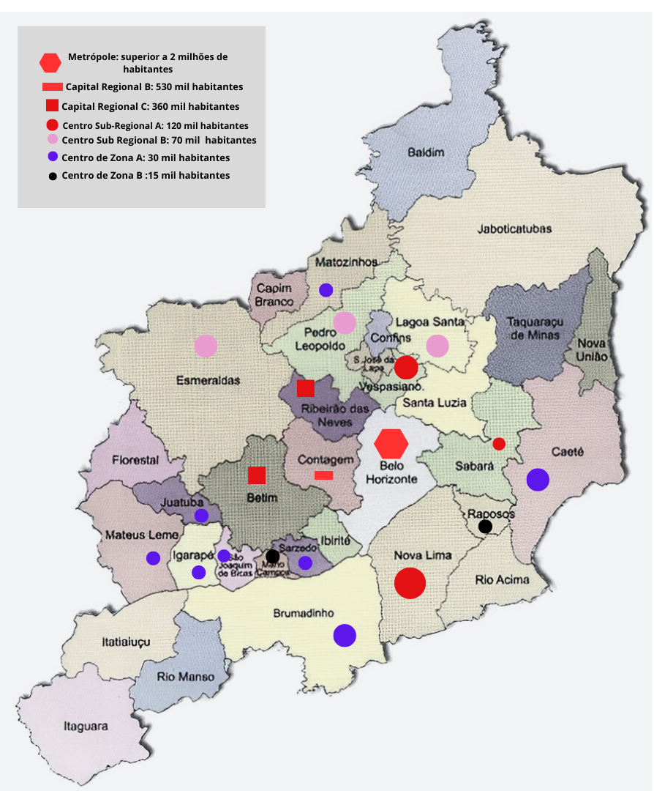

Setores Econômicos
Agronegócio: A maior parte das propriedades agrícolas é de pequeno ou médio porte, voltadas principalmente para a agricultura familiar. Esses produtores atendem prioritariamente ao mercado interno, com distribuição de alimentos como hortaliças, legumes, frutas, leite e derivados, além de flores e plantas ornamentais.. Muitos dos produtos cultivados são perecíveis, o que dificulta sua exportação em larga escala, pois o transporte a longas distâncias exige uma logística mais complexa e cara. A preocupação perante o agronegócio da RMBH, se intensifica com o avanço da urbanização na região metropolitana pode pressionar áreas rurais e diminuir o espaço disponível para a produção agrícola, representando um potencial desafio.
Setor Industrial: Caracterizada por uma indústria diversificada, com destaque para os setores de siderurgia, metalurgia, automotivo, químico e tecnologia da informação. Cidades como Betim, Contagem e Ibirité se destacam como fortes polos industriais, sediando multinacionais como: FIAT (montadora de veículos), Vallourec (manufatura) e grandes siderúrgicas.
Hierarquia Urbana da Região
A hierarquia urbana é a organização das cidades em uma escala de subordinação, que se baseia na importância de cada cidade no processo produtivo. A hierarquia urbana é determinada pela quantidade e variedade de bens e serviços oferecidos, e não apenas pelo tamanho ou população. A hierarquia urbana brasileira é estruturada em cinco níveis principais, de acordo com o IBGE: Metrópoles, Capitais Regionais, Centros Sub-Regionais, Centros de Zona, Centros Locais.
